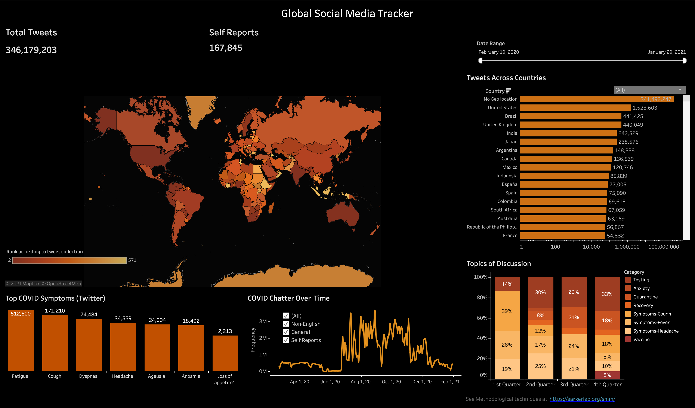
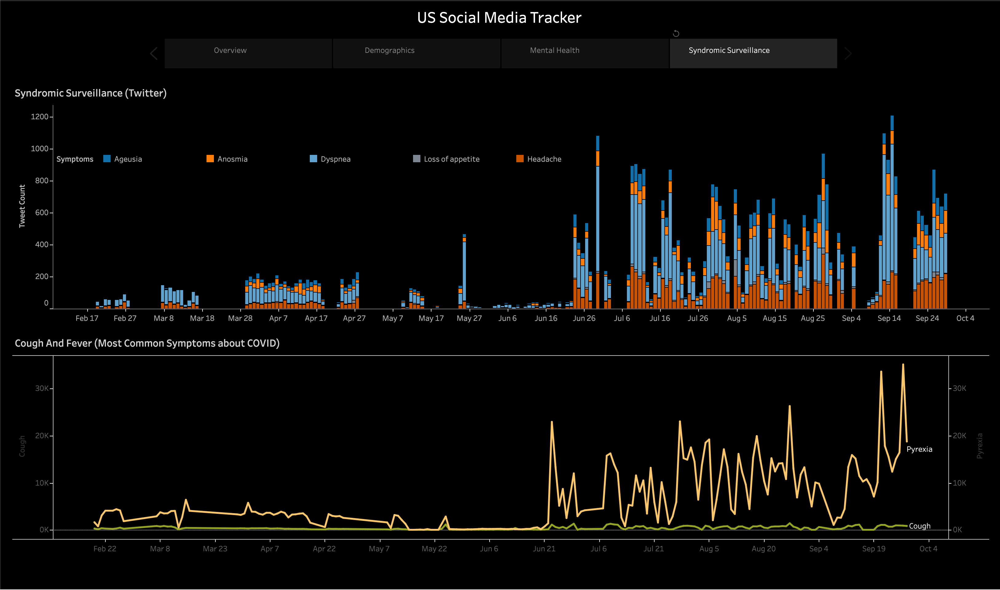
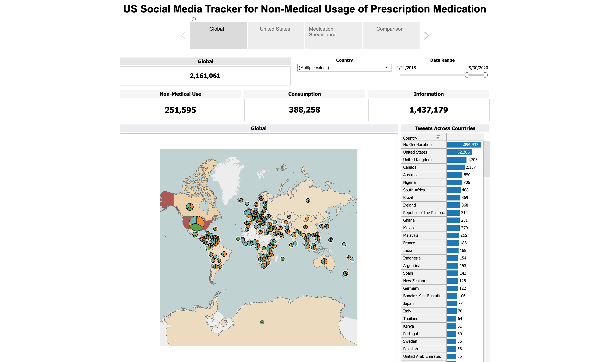

Home
Projects
Publications
Dashboard
People

Global Covid Social Media Tracker
Learn More

US Social Media Tracker
Learn More

US Social Media Tracker for Non-Medical Usage of Prescription Medication
Learn More